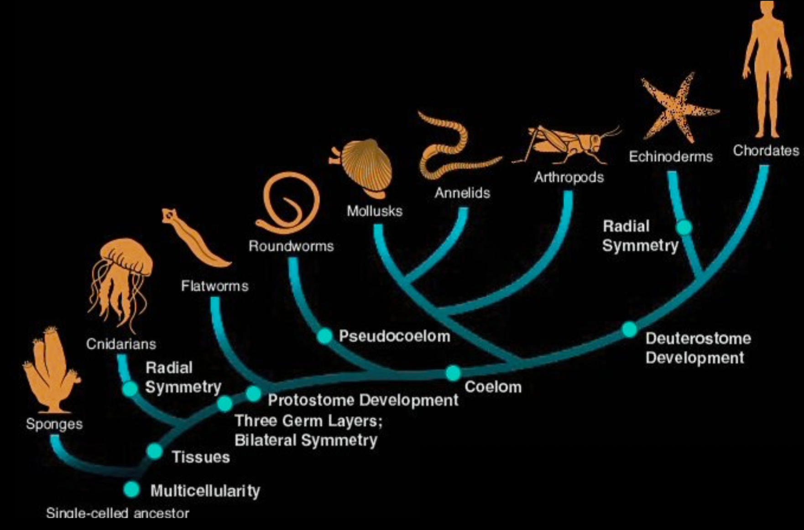
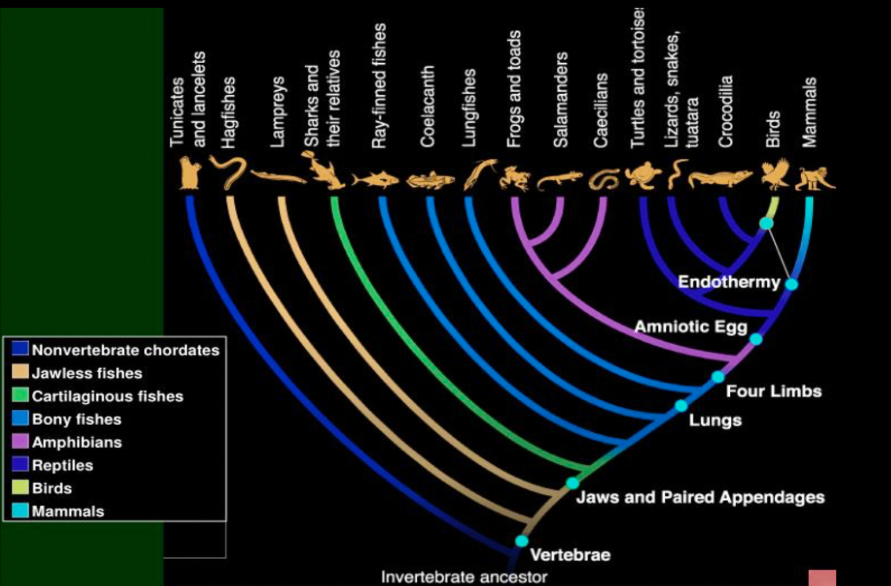

Main Divisions of the Animal Kingdom
The animal kingdom (Kingdom Animalia) is broadly divided into two major groups based on a key characteristic: the presence or absence of a vertebral column (backbone).
Vertebrates (Phylum Chordata, Subphylum Vertebrata):
- Key Feature: Possess a vertebral column (backbone) that protects the spinal cord.
- Evolutionary Significance: Represents a major step in animal evolution, allowing for larger size, more complex body structures, and greater mobility.
- General Examples: Fish (like salmon or tuna), amphibians (like frogs or salamanders), reptiles (like lizards or snakes), birds (like eagles or sparrows), and mammals (like humans or elephants).
Class Agnatha (Jawless Fishes):
- Key Features:
- Lack jaws; have a circular, sucking mouth often with teeth-like structures.
- Cartilaginous skeleton.
- Notochord persists throughout life.
- Lack paired fins in most.
- Ectothermic (cold-blooded).
- Examples: Lampreys, hagfish.
Class Osteichthyes (Bony Fishes):
- Key Features:
- Possess jaws and paired fins.
- Skeleton primarily made of bone.
- Skin covered in bony scales.
- Have a swim bladder for buoyancy control (in most).
- External fertilization common, but internal fertilization occurs in some.
- Ectothermic.
- Subgroups:
- Ray-finned fishes (Actinopterygii): Fins supported by thin bony rays.
- Lobe-finned fishes (Sarcopterygii): Fleshy, lobed fins that contain bones.
- Examples: Tuna, salmon, goldfish, perch (ray-finned); Lungfish, coelacanths (lobe-finned).
Class Amphibia (Amphibians):
- Key Features:
- Tetrapods (usually with four limbs).
- Smooth, moist skin permeable to water; used for respiration in some.
- Larval stage (if present) is aquatic and breathes with gills; adults typically terrestrial and breathe with lungs (though many exceptions exist).
- Dependence on water for reproduction (shell-less eggs).
- Three-chambered heart (two atria, one ventricle).
- Ectothermic.
- Examples: Frogs, toads, salamanders, newts, caecilians.
Class Reptilia (Reptiles):
- Key Features:
- Tetrapods (though some, like snakes, have lost limbs).
- Skin covered in dry, keratinized scales or scutes.
- Breathe exclusively with lungs.
- Amniotic eggs with a leathery shell.
- Three-chambered heart (except crocodiles, which have a four-chambered heart).
- Ectothermic (most).
- Examples: Lizards, snakes, turtles, crocodiles, tuataras.
Class Aves (Birds):
- Key Features:
- Tetrapods; forelimbs modified into wings (though some are flightless).
- Body covered in feathers.
- Breathe with lungs and air sacs.
- Lay amniotic eggs with a hard shell.
- Four-chambered heart.
- Endothermic (warm-blooded).
- Examples: Eagles, penguins, sparrows, ostriches.
Class Mammalia (Mammals):
- Key Features:
- Tetrapods (though some are adapted for aquatic life).
- Body covered in hair or fur.
- Breathe with lungs.
- Give birth to live young (viviparous) in most, but some lay eggs (monotremes).
- Produce milk to nourish young via mammary glands.
- Three middle ear bones.
- Four-chambered heart.
- Endothermic.
- Examples:Humans, whales, bats, rodents, elephants.
Invertebrates:
- Key Feature: Lack a vertebral column (backbone).
- Evolutionary Significance: Represent the earliest branches of the animal kingdom. Include the first animals to evolve multicellularity, true tissues, bilateral symmetry, and coeloms (fluid filled body cavity located between outer wall and digestive tract).
- General Examples: Sponges, jellyfish, worms (flatworms, roundworms, segmented worms), snails, insects, spiders, crabs, starfish, sea squirts, lancelets.
Phylum Chordata (Invertebrate Chordates):
Subphylum Urochordata (Tunicates or Sea Squirts):
- Characteristics: Marine filter feeders, larvae have a notochord and dorsal nerve cord (chordate features), adults are often sessile and lose some of these features.
- General Examples: Various types of sea squirts found in marine environments.
Subphylum Cephalochordata (Lancelets):
- Characteristics: Small, fish-like marine filter feeders that retain the notochord, dorsal nerve cord, pharyngeal slits, and post-anal tail throughout their life.
- General Examples: Lancelets found in shallow marine waters.
Phylum Porifera (Sponges):
- Characteristics: Simplest multicellular animals, lack true tissues and organs, filter feeders with pores and internal canals.
- General Examples: Various types of sea sponges found in oceans and some freshwater sponges.
Phylum Cnidaria (Cnidarians):
- Characteristics: Radially symmetrical, possess stinging cells (cnidocytes) for capturing prey, have a sac-like body with a single opening (mouth/anus), exist in polyp (sessile) and medusa (motile) forms.
- General Examples: Jellyfish, sea anemones, corals, and hydras.
Phylum Platyhelminthes (Flatworms):
- Characteristics: Bilaterally symmetrical, acoelomate (lack a body cavity), have a flattened body shape, possess a simple digestive system.
- General Examples: Planarians, flukes (like liver flukes), and tapeworms.
Phylum Nematoda (Roundworms):
- Characteristics: Cylindrical, unsegmented, pseudocoelomate (have a "false" body cavity), possess a complete digestive system with a mouth and anus.
- General Examples: Caenorhabditis elegans, hookworms, and Ascaris (intestinal roundworms).
Phylum Annelida (Segmented Worms):
- Characteristics: Bilaterally symmetrical, coelomate (have a true body cavity), bodies are segmented, allowing for specialized functions in different segments.
- General Examples: Earthworms, marine bristle worms (polychaetes), and leeches.
Phylum Mollusca (Molluscs):
- Characteristics: Soft-bodied, typically have a muscular foot for locomotion, a visceral mass containing organs, and a mantle that may secrete a shell.
- General Examples: Snails, slugs, clams, oysters, squids, and octopuses.
Phylum Arthropoda (Arthropods):
- Characteristics: Largest animal phylum, characterized by a hard exoskeleton (cuticle) made of chitin, a segmented body (head, thorax, abdomen), and jointed appendages adapted for various functions.
- General Examples: Insects (like ants, bees, butterflies), spiders, crabs, lobsters, centipedes, and millipedes.
Phylum Echinodermata (Echinoderms):
- Characteristics: Marine animals with radial symmetry (usually pentaradial) as adults, have a water vascular system for locomotion, feeding, and respiration, possess an internal skeleton of calcareous plates.
- General Examples: Starfish, sea urchins, sea cucumbers, brittle stars, and sea lilies.
Two cladograms showing the evolutionary relationship of animal kingdom are given below (Least Complex to Most Complex from left to right):

